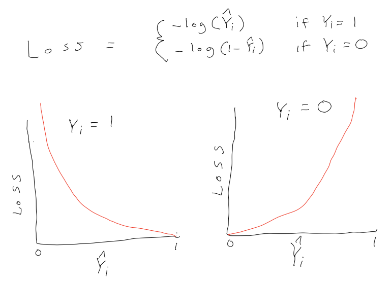
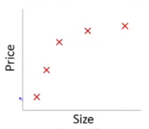
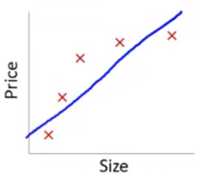
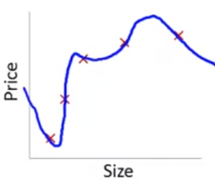
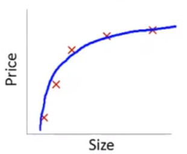
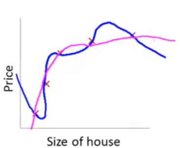

Regularization and Penalized Models
Overview of Unit
Learning Objectives
- Subsetting approaches: Forward, Backward, Best Subset (covered in reading only)
- Cost and Loss functions
- What are they and how are they used
- What are the specific formulas for linear model, logistic regression, and variants of glmnet (ridge, LASSO, full elasticnet)
- What is regularization
- What are its benefits?
- What are its costs?
- How does lambda affect bias-variance trade-off in glmnet
- What does alpha do?
- Feature engineering approaches for dimensionality reduction: PCA (covered in reading only)
- Other algorithms that do feature selection/dimensionality reduction: PCR and PLS (covered in reading only)
- Contrasts of PCA, PCR, PLS, and glmnet/LASSO for dimensionality reduction (covered in reading only)
Readings
- James et al. (2023) Chapter 6, pp 225 - 267
Post questions to the readings channel in Slack
Lecture Videos
- Lecture 1: An Introduction to Penalized/Regularized Algorithms ~ 15 mins
- [Lecture 2: Intuitions about Penalized Cost Functions and Regularization ~ 11 mins
- Lecture 3: Ridge Regression ~ 9 mins
- Lecture 4: LASSO ~ 8 mins
- Lecture 5: The Elastic net ~ 4 mins
- Lecture 6: Emprical Example - Many good predictors ~ 23 mins
- Lecture 7: Emprical Example - Good and zero predictors ~ 9 mins
- Lecture 8: Emprical Example - LASSO for covariate selection ~ 8 mins
Post questions to the video-lectures channel in Slack
Application Assignment and Quiz
Submit the application assignment here and complete the unit quiz by 8 pm on Wednesday, February 28th
Introduction to Penalized/Regularized Statistical Algorithms
Overview
Complex (e.g., flexible) models increase the chance of overfitting to the training set. This leads to:
- Poor prediction
- Burdensome prediction models for implementation (need to measure lots of predictors)
- Low power to test hypothesis about predictor effects
Complex models are difficult to interpret
Regularization is technique that:
- Reduces overfitting
- Allows for p >> n (!!!)
- May yield more interpretable models (LASSO, Elastic Net)
- May reduce implementation burden (LASSO, Elastic Net)
Regularization does this by applying a penalty to the parametric model coefficients (parameter estimates)
- This constrains/shrinks these coefficients to yield a simpler/less overfit model
- Some types of penalties shrink the coefficients to zero (feature selection)
We will consider three approaches to regularization
- L2 (Ridge)
- L1 (LASSO)
- Elastic net
These approaches are available for both regression and classification problems and for a variety of parametric statistical algorithms
Cost functions
To understand regularization, we need to first explicitly consider loss/cost functions for the parametric statistical models we have been using.
A loss function quantifies the error between a single predicted and observed outcome within some statistical model.
A cost function is simply the aggregate of the loss across all observations in the training sample.
Optimization procedures (least squares, maximum likelihood, gradient descent) seek to determine a set of parameter estimates that minimize some specific cost function for the training sample.
The cost function for the linear model is the mean squared error (squared loss):
\(\frac{1}{n}\sum_{i = 1}^{n} (Y_i - \hat{Y_i})^{2}\)
No constraints or penalties are placed on the parameter estimates (\(\beta_k\))
They can take on any values with the only goal to minimize the MSE in the training sample
The cost function for logistic regression is log loss:
\(\frac{1}{n}\sum_{i = 1}^{n} -Y_ilog(\hat{Y_i}) - (1-Y_i)log(1-\hat{Y_i})\)
where \(Y_i\) is coded 0,1 and \(\hat{Y_i}\) is the predicted probability that Y = 1
Again, no constraints or penalties are placed on the parameter estimates (\(\beta_k\))
They can take on any values with the only goal to minimize the sum of the log loss in the training sample

Intuitions about Penalized Cost Functions and Regularization
This is an example from a series of wonderfully clear lectures in a machine learning course by Andrew Ng in Coursera.
Lets imagine a training set:
- House sale price predicted by house size
- True DGP is quadratic. Diminishing increase in sale price as size increases
- N = 5 in training set

If we fit a linear model with size as the only feature…
\(\hat{sale\_price_i} = \beta_0 + \beta_1 * size\)
In this training set, we might get the model below (in blue)
This is a biased model (predicts too high for low and high house sizes; predicts too low for moderate size houses)
If we took this model to new data from the same quadratic DGP, it would clearly not predict very well

Lets consider the other extreme
- If we fit a 4th order polynomial model using size…
- \(\hat{sale\_price_i} = \beta_0 + \beta_1 * size + \beta_2 * size^2 + \beta_3 * size^3 + \beta_4 * size^4\)
- In this training set, we would get the model below (in blue)
- This is model is overfit to this training set. It would not predict well in new data from the same quadratic DGP
- Also, the model would have high variance (if we estimated the parameters in another N = 5 training set, they would be very different)

This problem with overfitting and variance isn’t limited to polynomial regression.
We would have the same problem (perfect fit in training with poor fit in new val data) if we predicted housing prices with many features when the training N = 5. e.g.,
\(\hat{sale\_price_i} = \beta_0 + \beta_1 * size + \beta_2 * year\_built + \beta_3 * num\_garages + \beta_4 * quality\)
Obviously, the correct model to fit is a second order polynomial model with size
- \(\hat{sale\_price_i} = \beta_0 + \beta_1 * size + \beta_2 * size^2\)
- But we couldn’t know this with real data because we wouldn’t know the underlying DGP
- When we don’t know the underlying DGP, we need to be able to consider potentially complex models with many features in some way that diminishes the potential problem with overfitting/model variance

What if we still fit a fourth order polynomial but changed the cost function to penalize the absolute value of \(\beta_3\) and \(\beta_4\) parameter estimates?
Typical cost based on MSE/squared loss:
- \(\frac{1}{n}\sum_{i = 1}^{n} (Y_i - \hat{Y_i})^{2}\)
Our new cost function:
- \([\frac{1}{n}\sum_{i = 1}^{n} (Y_i - \hat{Y_i})^{2}] + [1000 * \beta_3 + 1000 * \beta_4]\)
\([\frac{1}{n}\sum_{i = 1}^{n} (Y_i - \hat{Y_i})^{2}] + [1000 * \beta_3 + 1000 * \beta_4]\)
The only way to make the value of this new cost function small is to make \(\beta_3\) and \(\beta_4\) small
If we made the penalty applied to \(\beta_3\) and \(\beta_4\) large (e.g., 1000 as above), we will end up with the parameter estimates for these two features at approximately 0.
With a sufficient penalty applied, their parameter estimates will only change from zero to the degree that these changes accounted for a large enough drop in MSE to offset this penalty in the overall aggregate cost function.
\([\sum_{i = 1}^{n} (Y_i - \hat{Y_i})^{2}] + 1000 * \beta_3 + 1000 * \beta_4\)
- With this penalty in place, our final model might shift from the blue model to the pink model below. The pink model is mostly quadratic but with a few extra “wiggles” if \(\beta_3\) and \(\beta_4\) are not exactly 0.

Of course, we don’t typically know in advance which parameter estimates to penalize.
- Instead, we apply some penalty to all the parameter estimates (except \(\beta_0\))
- This shrinks the parameter estimates for all the features to some degree
- However, features that do reduce MSE meaningfully will be “worth” including with non-zero parameter estimates
- You can also control the shrinkage by controlling the size of the penalty
In general, regularization produces models that:
- Are simpler (e.g. smoother, smaller coefficients/parameter estimates)
- Are less prone to overfitting
- Allow for models with p >> n
- Are sometimes more interpretable (LASSO, Elastic Net)
These benefits are provided by the introduction of some bias into the parameter estimates
This allows for a bias-variance trade-off where some bias is introduced for a big reduction in variance of model fit
We will now consider three regularization approaches that introduce different types of penalties to shrink the parameter estimates
- L2 (Ridge)
- L1 (LASSO)
- Elastic net
These approaches are available for both regression and classification problems and for a variety of parametric statistical algorithms
A fourth common regularized classification model (also sometimes used for regression) is the support vector machine (not covered in class but commonly used as well and easy to understand with this foundation)
Each of these approaches uses a different specific penalty, which has implications for how the model performs in different settings
Ridge Regression
The cost function for Ridge Regression is:
- \(\frac{1}{n}([\sum_{i = 1}^{n} (Y_i - \hat{Y_i})^{2}] + [\:\lambda\sum_{j = 1}^{p} \beta_j^{2}\:])\)
It has two components:
- Inside the left brackets is the SSE from linear regression
- Inside the right brackets is the Ridge penalty.
This penalty:
- Includes the sum of the squared parameter estimates (excluding \(\beta_0\)). Squaring removes the sign of these parameter estimates.
- This sum is multiplied by \(\lambda\), a hyperparameter in Ridge regression. Lambda allows us to tune the size of the penalty.
- This is an application of the L2 norm (matrix algebra) to the vector of parameter estimates
\(\frac{1}{n}([\sum_{i = 1}^{n} (Y_i - \hat{Y_i})^{2}] + [\:\lambda\sum_{j = 1}^{p} \beta_j^{2}\:])\)
Question: What will happen to a Ridge regression model’s parameter estimates and its performance (i.e., its bias & variance) as lambda increases/decreases?
\(\frac{1}{n}([\sum_{i = 1}^{n} (Y_i - \hat{Y_i})^{2}] + [\:\lambda\sum_{j = 1}^{p} \beta_j^{2}\:])\)
Lets compare Ridge regression to OLS (ordinary least squares with squared loss cost function) linear regression
Ridge parameter estimates are biased but have lower variance (smaller SE) than OLS
Ridge may predict better in new data
- This depends on the value of \(\lambda\) selected and its impact on bias-variance trade-off in Ridge regression vs. OLS
- There does exist a value of \(\lambda\) for which Ridge predicts better than OLS in new data
Ridge regression (but not OLS) allows for p > (or even >>) than n
Ridge regression (but not OLS) accommodates highly correlated (or even perfectly multi-collinear) features
OLS (but not Ridge regression) is scale invariant
- You should scale (mean and standard deviation correct) features for use with Ridge regression
\(\frac{1}{n}([\sum_{i = 1}^{n} (Y_i - \hat{Y_i})^{2}] + [\:\lambda\sum_{j = 1}^{p} \beta_j^{2}\:])\)
Unless the features are on the same scale to start, you should standardize them for all applications (regression and classification) of Ridge (and also LASSO and elastic net). You can handle this during feature engineering in the recipe.
LASSO Regression
LASSO is an acronym for Least Absolute Shrinkage and Selection Operator
The cost function for LASSO Regression is:
- \(\frac{1}{n}([\sum_{i = 1}^{n} (Y_i - \hat{Y_i})^{2}] + [\:\lambda\sum_{j = 1}^{p} |\beta_j|\:])\)
It has two components:
- Inside the left brackets is the SSE from linear regression
- Inside the right brackets is the LASSO penalty.
This penalty:
- Includes the sum of the absolute value of the parameter estimates (excluding \(\beta_0\)). The absolute value removes the sign of these parameter estimates.
- This sum is multiplied by \(\lambda\), a hyperparameter in LASSO regression. Lambda allows us to tune the size of the penalty.
- This is an application of the L1 norm to the vector of parameter estimates
LASSO vs. Ridge Comparison
With respect to the parameter estimates:
LASSO yields sparse solution (some parameter estimates set to exactly zero)
Ridge tends to retain all features (parameter estimates don’t get set to exactly zero)
LASSO selects one feature among correlated group and sets others to zero
Ridge shrinks all parameter estimates for correlated features
Ridge tends to outperform LASSO wrt prediction in new data. There are cases where LASSO can predict better (most features have zero effect and only a few are non-zero) but even in those cases, Ridge is competitive.
Advantages of LASSO
Does feature selection (sets parameter estimates to exactly 0)
- Yields a sparse solution
- Sparse model is more interpretable?
- Sparse model is easier to implement? (fewer features included so don’t need to measure as many predictors)
More robust to outliers (similar to LAD vs. OLS)
Tends to do better when there are a small number of robust features and the others are close to zero or zero
Advantages of Ridge
- Computationally superior (closed form solution vs. iterative; Only one solution to minimize the cost function)
- More robust to measurement error in features (remember no measurement error is an assumption for unbiased estimates in OLS regression)
- Tends to do better when there are many features with large (and comparable) effects (i.e., most features are related to the outcome)
Elastic Net Regression
The Elastic Net blends the L1 and L2 penalties to obtain the benefits of each of those approaches.
We will use the implementation of the Elastic Net in glmnet in R.
You can also read additional introductory documentation for this package
In the Gaussian regression context, the Elastic Net cost function is:
- \(\frac{1}{n}([\sum_{i = 1}^{n} (Y_i - \hat{Y_i})^{2}] + [\:\lambda (\alpha\sum_{j = 1}^{p} |\beta_j| + (1-\alpha)\sum_{j = 1}^{p} \beta_j^{2})\:])\)
This model has two hyper-parameters
- \(\lambda\) controls the degree of regularization as before
- \(\alpha\) is a “mixing” parameter that blends the degree of L1 and L2 contributions to the aggregate penalty. (Proportion of LASSO penalty)
- \(\alpha\) = 1 results in the LASSO model
- \(\alpha\) = 0 results in the Ridge model
- Intermediate values for \(\alpha\) blend these penalties together proportionally to include more or less LASSO penalty
As before (e.g., KNN), best values of \(\lambda\) (and \(\alpha\)) can be selected using resampling using tune_grid()
The grid needs to have crossed values of both penalty (\(lambda\)) and mixture (\(alpha\)) for glmnet
- Can use
expand_grid() - Only penalty is needed in grid if fitting a Ridge or LASSO model.
Empirical Example 1: Many “good” but correlated predictors
For the first example, we will simulate data with:
- Many correlated predictors
- All related to outcome
- Get a small training sample
- Get a big test sample (for more precise estimate of model performance)
First we set the predictors for our simulation
Then we draw samples from population
set.seed(12345)
mu <- rep(0, n_x) # means for all variables = 0
sigma <- matrix(covs_x, nrow = n_x, ncol = n_x)
diag(sigma) <- vars_x
sigma [,1] [,2] [,3] [,4] [,5] [,6] [,7] [,8] [,9] [,10] [,11] [,12] [,13]
[1,] 100 50 50 50 50 50 50 50 50 50 50 50 50
[2,] 50 100 50 50 50 50 50 50 50 50 50 50 50
[3,] 50 50 100 50 50 50 50 50 50 50 50 50 50
[4,] 50 50 50 100 50 50 50 50 50 50 50 50 50
[5,] 50 50 50 50 100 50 50 50 50 50 50 50 50
[6,] 50 50 50 50 50 100 50 50 50 50 50 50 50
[7,] 50 50 50 50 50 50 100 50 50 50 50 50 50
[8,] 50 50 50 50 50 50 50 100 50 50 50 50 50
[9,] 50 50 50 50 50 50 50 50 100 50 50 50 50
[10,] 50 50 50 50 50 50 50 50 50 100 50 50 50
[11,] 50 50 50 50 50 50 50 50 50 50 100 50 50
[12,] 50 50 50 50 50 50 50 50 50 50 50 100 50
[13,] 50 50 50 50 50 50 50 50 50 50 50 50 100
[14,] 50 50 50 50 50 50 50 50 50 50 50 50 50
[15,] 50 50 50 50 50 50 50 50 50 50 50 50 50
[16,] 50 50 50 50 50 50 50 50 50 50 50 50 50
[17,] 50 50 50 50 50 50 50 50 50 50 50 50 50
[18,] 50 50 50 50 50 50 50 50 50 50 50 50 50
[19,] 50 50 50 50 50 50 50 50 50 50 50 50 50
[20,] 50 50 50 50 50 50 50 50 50 50 50 50 50
[,14] [,15] [,16] [,17] [,18] [,19] [,20]
[1,] 50 50 50 50 50 50 50
[2,] 50 50 50 50 50 50 50
[3,] 50 50 50 50 50 50 50
[4,] 50 50 50 50 50 50 50
[5,] 50 50 50 50 50 50 50
[6,] 50 50 50 50 50 50 50
[7,] 50 50 50 50 50 50 50
[8,] 50 50 50 50 50 50 50
[9,] 50 50 50 50 50 50 50
[10,] 50 50 50 50 50 50 50
[11,] 50 50 50 50 50 50 50
[12,] 50 50 50 50 50 50 50
[13,] 50 50 50 50 50 50 50
[14,] 100 50 50 50 50 50 50
[15,] 50 100 50 50 50 50 50
[16,] 50 50 100 50 50 50 50
[17,] 50 50 50 100 50 50 50
[18,] 50 50 50 50 100 50 50
[19,] 50 50 50 50 50 100 50
[20,] 50 50 50 50 50 50 100x <- MASS::mvrnorm(n = n_cases_trn, mu, sigma) |>
magrittr::set_colnames(str_c("x_", 1:n_x)) |>
as_tibble()
data_trn_1 <- x |>
mutate(y = rowSums(t(t(x)*b_x)) + rnorm(n_cases_trn, 0, y_error)) |>
glimpse()Rows: 100
Columns: 21
$ x_1 <dbl> -7.4799044, 1.0236917, 6.7326934, -14.9063964, 0.8889487, 6.11951…
$ x_2 <dbl> -4.382765, -16.434199, -1.959195, 2.370728, -5.953006, 12.740186,…
$ x_3 <dbl> -1.3926483, -11.8268783, 1.9367593, 6.3597281, -4.7341473, 13.669…
$ x_4 <dbl> -1.4098139, -18.1013510, -0.4859097, -10.1016905, 4.9501196, 21.1…
$ x_5 <dbl> -11.32152449, -6.57272989, 6.99237521, -4.05418224, -9.28203264, …
$ x_6 <dbl> 0.4287849, 1.0753238, 7.7437722, 3.2533250, 4.9400340, 25.6213841…
$ x_7 <dbl> -6.0659342, -2.3248026, -4.2596876, 1.5548678, -8.3378011, 18.483…
$ x_8 <dbl> -11.7704021, -2.7225251, -2.9738809, 11.7014682, 4.7353163, 13.29…
$ x_9 <dbl> -17.65256942, -16.75121020, 7.42850231, 2.93173355, 15.15289724, …
$ x_10 <dbl> -3.7916335, -3.5774760, 4.3791349, 4.1647748, 1.8069956, 13.21176…
$ x_11 <dbl> 1.7944916, 6.8024759, -5.6288959, 7.8606019, -11.4396013, 12.8486…
$ x_12 <dbl> 7.2748185, 1.1123695, 5.4570129, 7.7298625, -8.4277385, 9.1001513…
$ x_13 <dbl> 3.9636299, 1.0714662, 6.4823620, 9.2692615, -0.2841161, 19.649099…
$ x_14 <dbl> -12.4510389, -19.6153036, -7.2578101, 9.0097406, -3.8630757, -0.9…
$ x_15 <dbl> -18.423674, -4.868512, -4.172538, 13.451919, -8.647879, 18.845043…
$ x_16 <dbl> -11.53843545, 0.26737312, -2.75900928, -0.03913761, -12.88983878,…
$ x_17 <dbl> 3.7450353, -0.4135728, -10.8964534, 3.5617282, -16.3498259, 12.86…
$ x_18 <dbl> -6.774703, -14.686612, 1.777447, 13.867454, -10.362955, 15.853674…
$ x_19 <dbl> 3.9091399, 0.1744112, 11.4781208, 2.2775369, -6.0500447, 8.658232…
$ x_20 <dbl> 8.487960, 3.556668, -4.175244, -4.545339, -13.653683, 9.542350, -…
$ y <dbl> -145.635298, 4.810920, -41.803024, 175.580620, 52.932735, 267.112…Set up a tibble to track model performance in train and test sets
- We are using test to repeatedly to get rigorous held-out performance separate from model selection process.
- Just for our understanding
- We would not choose a model configuration based on test set error
Fit a standard (OLS) linear regression
Fit the linear model
- No feature engineering needed. Can use raw predictors as features
- No resampling needed b/c there are no hyperparameters
fit_lm_1 <-
linear_reg() |>
set_engine("lm") |>
fit(y ~ ., data = data_trn_1)
fit_lm_1 |>
tidy() |>
print(n = 21)# A tibble: 21 × 5
term estimate std.error statistic p.value
<chr> <dbl> <dbl> <dbl> <dbl>
1 (Intercept) -5.22 12.0 -0.436 0.664
2 x_1 -1.26 1.71 -0.736 0.464
3 x_2 -0.112 1.53 -0.0732 0.942
4 x_3 0.780 1.43 0.545 0.588
5 x_4 0.970 1.54 0.632 0.529
6 x_5 -0.327 1.52 -0.215 0.830
7 x_6 -0.325 1.67 -0.195 0.846
8 x_7 0.896 1.75 0.512 0.610
9 x_8 1.83 1.69 1.08 0.282
10 x_9 3.64 1.63 2.24 0.0282
11 x_10 3.84 1.55 2.47 0.0155
12 x_11 3.11 1.78 1.75 0.0845
13 x_12 0.592 1.78 0.332 0.741
14 x_13 0.108 1.61 0.0669 0.947
15 x_14 1.15 1.46 0.787 0.434
16 x_15 -1.60 1.73 -0.922 0.359
17 x_16 1.75 1.87 0.935 0.353
18 x_17 3.17 1.64 1.93 0.0569
19 x_18 1.35 1.67 0.811 0.420
20 x_19 1.53 1.51 1.01 0.315
21 x_20 -0.908 1.57 -0.580 0.564 Irreducible error was set by y_error (100)
- Overfit to train
- Much worse in test
Fit LASSO
LASSO, Ridge, and glmnet all need features on same scale to apply penalty consistently
- Use
step_normalize(). This sets mean = 0, sd = 1 (NOTE: Bad name as it does NOT change shape of distribution!) - Can use same recipe for LASSO, Ridge, and glmnet
- Can use same train and test feature matrices as well
Set up splits for resampling for tuning hyperparameters
- Use bootstrap for more precise estimation (even if more biased). Good for selection
- Can use same bootstrap splits for LASSO, Ridge, and glmnet
Now onto the LASSO….
We need to tune \(\lambda\) (tidymodels calls this penalty)
- \(\alpha\) = 1 (tidymodels calls this
mixture) - Set up grid with exponential values for
penalty glmnetuses warm starts so can fit lots of values for \(\lambda\) quickly- Could also use
cv.glmnet()directly inglmnetpackage to find good values. Seeget_lamdas()in fun_modeling.R
Evaluate model performance in validation sets (OOB)
Make sure that you have hit a clear minimum (bottom of U or at least an asymptote)

Fit best configuration (i.e., best lambda) to full train set
- Use
select_best() - Don’t forget to indicate which column (\(penalty\))
We can now use tidy() to look at the LASSO parameter estimates
tidy()usesMatrixpackage, which has conflicts withtidyr. Load the package without those conflicting functions
Now call tidy()
- Notice that LASSO sets some \(\beta\) to 0 even though none are 0 in DGP
- LASSO is not great at reproducing the DGP!
# A tibble: 21 × 3
term estimate penalty
<chr> <dbl> <dbl>
1 (Intercept) -41.2 10.8
2 x_1 0 10.8
3 x_2 0 10.8
4 x_3 4.89 10.8
5 x_4 6.63 10.8
6 x_5 0 10.8
7 x_6 0 10.8
8 x_7 10.7 10.8
9 x_8 9.46 10.8
10 x_9 34.6 10.8
11 x_10 32.0 10.8
12 x_11 25.4 10.8
13 x_12 3.23 10.8
14 x_13 0.681 10.8
15 x_14 8.38 10.8
16 x_15 0 10.8
17 x_16 14.5 10.8
18 x_17 22.9 10.8
19 x_18 13.4 10.8
20 x_19 6.83 10.8
21 x_20 0 10.8Irreducible error was set by y_error (100)
- Somewhat overfit to train
- Somewhat better in test
(error_ex1 <- error_ex1 |>
bind_rows(tibble(model = "LASSO model",
rmse_trn = rmse_vec(truth = feat_trn_1$y,
estimate = predict(fit_lasso_1,
feat_trn_1)$.pred),
rmse_test = rmse_vec(truth = feat_test_1$y,
estimate = predict(fit_lasso_1,
feat_test_1)$.pred))))# A tibble: 2 × 3
model rmse_trn rmse_test
<chr> <dbl> <dbl>
1 linear model 91.9 112.
2 LASSO model 94.0 108.Fit Ridge
Fit Ridge algorithm
- Tune \(\lambda\) (
penalty) - May need to experiment to get right range of values for lambda
- \(\alpha\) = 0 (
mixture) - Evaluate model configurations in OOB validation sets <<<<<<< HEAD
Review hyperparameter plot

Fit best model configuration (i.e., best lambda) in full train set
- Notice that no \(\beta\) are exactly 0
- Why are parameter estimates not near 1 for LASSO and Ridge?
fit_ridge_1 <-
linear_reg(penalty = select_best(fits_ridge_1)$penalty,
mixture = 0) |>
set_engine("glmnet") |>
fit(y ~ ., data = feat_trn_1)
fit_ridge_1 |>
tidy() |>
print(n = 21)# A tibble: 21 × 3
term estimate penalty
<chr> <dbl> <dbl>
1 (Intercept) -41.2 276.
2 x_1 5.99 276.
3 x_2 6.87 276.
4 x_3 9.14 276.
5 x_4 9.00 276.
6 x_5 5.24 276.
7 x_6 8.53 276.
8 x_7 11.2 276.
9 x_8 9.12 276.
10 x_9 14.0 276.
11 x_10 14.5 276.
12 x_11 13.5 276.
13 x_12 7.14 276.
14 x_13 7.97 276.
15 x_14 10.2 276.
16 x_15 7.47 276.
17 x_16 10.3 276.
18 x_17 12.5 276.
19 x_18 11.8 276.
20 x_19 7.70 276.
21 x_20 4.57 276.Irreducible error was set by y_error (100)
- Much less overfit to train
- Still not bad in test
(error_ex1 <- error_ex1 |>
bind_rows(tibble(model = "Ridge model",
rmse_trn = rmse_vec(truth = feat_trn_1$y,
estimate = predict(fit_ridge_1,
feat_trn_1)$.pred),
rmse_test = rmse_vec(truth = feat_test_1$y,
estimate = predict(fit_ridge_1,
feat_test_1)$.pred))))# A tibble: 3 × 3
model rmse_trn rmse_test
<chr> <dbl> <dbl>
1 linear model 91.9 112.
2 LASSO model 94.0 108.
3 Ridge model 98.5 104.Fit glmnet
Now we need to tune both
- \(\lambda\) (
penalty) - \(\alpha\) (
mixture) - Typical to only evaluate a small number of \(alpha\)
- Warm starts across \(\lambda\)

Fit best configuration in full train set
- Can use
select_best()for both hyperparameters, separately - Ridge was best (but cool that glmnet could determine that empirically!)
# A tibble: 21 × 3
term estimate penalty
<chr> <dbl> <dbl>
1 (Intercept) -41.2 276.
2 x_1 5.99 276.
3 x_2 6.87 276.
4 x_3 9.14 276.
5 x_4 9.00 276.
6 x_5 5.24 276.
7 x_6 8.53 276.
8 x_7 11.2 276.
9 x_8 9.12 276.
10 x_9 14.0 276.
11 x_10 14.5 276.
12 x_11 13.5 276.
13 x_12 7.14 276.
14 x_13 7.97 276.
15 x_14 10.2 276.
16 x_15 7.47 276.
17 x_16 10.3 276.
18 x_17 12.5 276.
19 x_18 11.8 276.
20 x_19 7.70 276.
21 x_20 4.57 276.A final comparison of training and test error for the four statistical algorithms
(error_ex1 <- error_ex1 |>
bind_rows(tibble(model = "glmnet model",
rmse_trn = rmse_vec(truth = feat_trn_1$y,
estimate = predict(fit_glmnet_1,
feat_trn_1)$.pred),
rmse_test = rmse_vec(truth = feat_test_1$y,
estimate = predict(fit_glmnet_1,
feat_test_1)$.pred))))# A tibble: 4 × 3
model rmse_trn rmse_test
<chr> <dbl> <dbl>
1 linear model 91.9 112.
2 LASSO model 94.0 108.
3 Ridge model 98.5 104.
4 glmnet model 98.5 104.Empirical Example 2: Good and Zero Predictors
For the second example, we will simulate data with:
- Two sets of correlated predictors
- First set related to outcome
- Second set unrelated to outcome
- Get a small training sample
- Get a big test sample (for more precise estimates of performance of our model configurations)
Set up simulation parameters
Simulate predictors and Y
set.seed(2468)
x <- MASS::mvrnorm(n = n_cases_trn, mu, sigma) |>
magrittr::set_colnames(str_c("x_", 1:n_x)) |>
as_tibble()
data_trn_2 <- x |>
mutate(y = rowSums(t(t(x)*b_x)) + rnorm(n_cases_trn, 0, y_error)) |>
glimpse()Rows: 100
Columns: 21
$ x_1 <dbl> 6.6120448, -2.4315795, 10.0284465, 2.8880849, 0.6879733, 5.733069…
$ x_2 <dbl> 6.732135, -6.886575, 4.037737, -2.108035, -10.401328, 17.655429, …
$ x_3 <dbl> -7.9084791, -0.9541707, 1.9668472, -15.9822168, -3.7921834, 9.583…
$ x_4 <dbl> -1.3333051, 10.5841591, 1.0329146, -5.8848456, 5.8751565, 17.9547…
$ x_5 <dbl> 5.4258194, 18.1754493, 18.3107759, 4.2999158, -12.0440144, 18.238…
$ x_6 <dbl> -4.3345960, 6.2063944, -9.6829079, -2.3638247, -11.4994761, 16.97…
$ x_7 <dbl> 13.377810, 12.761476, 3.364706, -7.047563, -9.452121, -3.063861, …
$ x_8 <dbl> 4.9863053, -10.0216563, 6.0416675, -9.6087385, -5.2677671, 18.807…
$ x_9 <dbl> -11.2654331, 0.3969312, 4.5089003, 6.2910046, -5.5706542, 6.30376…
$ x_10 <dbl> -5.3243680, -4.1584832, 16.4302778, -4.5227897, -0.5759885, 12.27…
$ x_11 <dbl> -2.8717748, -15.9527089, -8.4020651, -21.4067819, -5.1716587, -1.…
$ x_12 <dbl> -0.8255710, -13.9063481, -7.8553560, -15.6174041, -0.2032351, -0.…
$ x_13 <dbl> -5.0226487, 0.2423470, -13.4792413, -17.7322866, -4.2641882, -13.…
$ x_14 <dbl> 1.6697344, -9.7472781, 1.9116596, -14.2383036, 3.4108820, -7.1857…
$ x_15 <dbl> -4.4078587, -17.3549677, -13.3750642, -6.3436646, -14.4783016, -1…
$ x_16 <dbl> -12.5987264, 3.0650253, -10.1369743, -15.4306537, -16.8116483, -7…
$ x_17 <dbl> 10.0679662, -16.2680745, -7.8039992, -30.4310419, -7.8560756, -0.…
$ x_18 <dbl> 4.9402996, -15.4777909, 0.5120623, -24.0317505, -2.8721223, 0.461…
$ x_19 <dbl> 3.90266477, -18.02732385, 0.09474399, -21.39430406, -11.94936843,…
$ x_20 <dbl> 5.4561394, -3.4090854, -0.3550752, -11.9522175, -5.2609615, 2.381…
$ y <dbl> -94.94590, 69.75956, 88.46711, 15.72162, 145.49463, 101.30513, 10…x <- MASS::mvrnorm(n = n_cases_test, mu, sigma) |>
magrittr::set_colnames(str_c("x_", 1:n_x)) |>
as_tibble()
data_test_2 <- x |>
mutate(y = rowSums(t(t(x)*b_x)) + rnorm(n_cases_test, 0, y_error)) |>
glimpse()Rows: 1,000
Columns: 21
$ x_1 <dbl> -19.3260095, -5.3623506, -16.9255899, 5.5493174, 14.9965119, -11.…
$ x_2 <dbl> -3.7042124, 0.1290587, -3.0372145, 9.2876528, 12.3956629, -7.8307…
$ x_3 <dbl> -7.79209805, 18.25340113, 0.06833241, -2.27459711, 8.76517873, 9.…
$ x_4 <dbl> -3.3334124, 12.2829002, 3.9338672, -3.9389029, 5.2878331, -2.1167…
$ x_5 <dbl> -34.9426303, 9.2574023, -3.6417173, -5.9916743, 10.4261807, 1.655…
$ x_6 <dbl> -0.001829374, 20.600024213, 0.173148730, 6.104400301, 8.269919307…
$ x_7 <dbl> -1.4374735, 7.5405424, 6.5958816, -5.4467627, 15.0439131, 1.45756…
$ x_8 <dbl> -15.5100796, -4.5944480, 3.8149838, 11.9367657, 11.9002354, 5.760…
$ x_9 <dbl> -14.2491503, -2.1829725, 8.8566042, 4.9237162, -1.0992521, -6.144…
$ x_10 <dbl> -9.4656790, 15.3363435, 16.4882579, 6.1347801, 7.1040896, 19.3482…
$ x_11 <dbl> -3.6565433, 4.8599310, 1.5807573, -2.0951752, 3.4182659, 8.555763…
$ x_12 <dbl> 0.2197692, -1.4002588, 15.6415398, 2.4429828, 10.3908169, 15.7459…
$ x_13 <dbl> -0.4834889, 14.4404582, -6.1966844, 2.2812604, -0.6109369, 14.888…
$ x_14 <dbl> 2.2369810, 23.6286165, 14.3772218, 4.5313060, 7.4540744, 11.28109…
$ x_15 <dbl> 12.2165650, 2.8590601, 9.6320309, -0.1679529, -1.0693068, 6.59127…
$ x_16 <dbl> -1.1872969, -4.9773499, 2.9446327, 6.4909150, 3.8271113, 7.574543…
$ x_17 <dbl> 23.2758817, 5.1783142, -5.7455295, 10.4846644, 11.1625519, -5.491…
$ x_18 <dbl> 5.26704690, 14.01330775, 15.70541303, 25.65765475, 4.40028923, 19…
$ x_19 <dbl> 8.8461426, 12.4465517, 7.2947844, 21.1447000, 2.1949018, 13.48330…
$ x_20 <dbl> 2.89540058, 5.48058724, 6.98881342, -0.09682534, 15.03106832, 16.…
$ y <dbl> -83.529025, 83.571326, 86.073513, -95.654257, 79.326001, 114.5172…Set up a tibble to track model performance in train and test
Fit a standard (OLS) linear regression
Fit and evaluate the linear model
fit_lm_2 <-
linear_reg() |>
set_engine("lm") |>
fit(y ~ ., data = data_trn_2)
fit_lm_2 |>
tidy() |>
print(n = 21)# A tibble: 21 × 5
term estimate std.error statistic p.value
<chr> <dbl> <dbl> <dbl> <dbl>
1 (Intercept) -14.0 10.8 -1.30 0.198
2 x_1 2.93 1.35 2.17 0.0330
3 x_2 -0.800 1.33 -0.602 0.549
4 x_3 1.24 1.62 0.762 0.448
5 x_4 1.20 1.46 0.821 0.414
6 x_5 2.31 1.44 1.60 0.114
7 x_6 1.23 1.57 0.786 0.434
8 x_7 2.63 1.46 1.80 0.0759
9 x_8 0.452 1.33 0.340 0.734
10 x_9 -0.190 1.38 -0.138 0.891
11 x_10 0.813 1.67 0.486 0.628
12 x_11 -2.19 1.36 -1.61 0.112
13 x_12 0.725 1.43 0.508 0.613
14 x_13 3.73 1.41 2.65 0.00983
15 x_14 -0.183 1.40 -0.131 0.896
16 x_15 -0.163 1.32 -0.123 0.902
17 x_16 -4.54 1.42 -3.20 0.00199
18 x_17 1.81 1.24 1.46 0.149
19 x_18 -1.19 1.31 -0.909 0.366
20 x_19 0.421 1.33 0.317 0.752
21 x_20 -0.0841 1.36 -0.0617 0.951 Irreducible error was set by y_error (100)
- Very overfit to train
- Very poor performance in test
(error_ex2 <- error_ex2 |>
bind_rows(tibble(model = "linear model",
rmse_trn = rmse_vec(truth = data_trn_2$y,
estimate = predict(fit_lm_2,
data_trn_2)$.pred),
rmse_test = rmse_vec(truth = data_test_2$y,
estimate = predict(fit_lm_2,
data_test_2)$.pred))))# A tibble: 1 × 3
model rmse_trn rmse_test
<chr> <dbl> <dbl>
1 linear model 83.4 117.Fit LASSO
For all glmnet algorithms, set up:
- Recipe
- Feature matrices
- Bootstraps for model configuration selection (tuning)
Tune \(\lambda\) for LASSO
- We can use sample penalty grids from earlier example because sample size and number of features hasnt changed so likely still good
Plot hyperparameters

Fit best LASSO to full training set
- Notice the many \(\beta\) = 0
- It did set some of the “good” features to 0 as well
fit_lasso_2 <-
linear_reg(penalty = select_best(fits_lasso_2)$penalty,
mixture = 1) |>
set_engine("glmnet") |>
fit(y ~ ., data = feat_trn_2)
fit_lasso_2 |>
tidy() |>
print(n = 21)# A tibble: 21 × 3
term estimate penalty
<chr> <dbl> <dbl>
1 (Intercept) 5.52 8.78
2 x_1 21.6 8.78
3 x_2 0 8.78
4 x_3 2.11 8.78
5 x_4 14.8 8.78
6 x_5 15.4 8.78
7 x_6 4.31 8.78
8 x_7 24.0 8.78
9 x_8 1.88 8.78
10 x_9 0 8.78
11 x_10 11.2 8.78
12 x_11 0 8.78
13 x_12 0 8.78
14 x_13 8.33 8.78
15 x_14 0 8.78
16 x_15 0 8.78
17 x_16 -17.4 8.78
18 x_17 0 8.78
19 x_18 -0.341 8.78
20 x_19 0 8.78
21 x_20 0 8.78Irreducible error was set by y_error (100)
- Somewhat overfit to train
- Good in val
(error_ex2 <- error_ex2 |>
bind_rows(tibble(model = "LASSO model",
rmse_trn = rmse_vec(truth = feat_trn_2$y,
estimate = predict(fit_lasso_2,
feat_trn_2)$.pred),
rmse_test = rmse_vec(truth = feat_test_2$y,
estimate = predict(fit_lasso_2,
feat_test_2)$.pred))))# A tibble: 2 × 3
model rmse_trn rmse_test
<chr> <dbl> <dbl>
1 linear model 83.4 117.
2 LASSO model 89.8 104.Fit Ridge
Tune \(\lambda\) for Ridge
- can use ridge penalty grid from example 1
Plot hyperparameters


Fit best Ridge to full training set
- Notice no \(\beta\) = 0
fit_ridge_2 <-
linear_reg(penalty = select_best(fits_ridge_2)$penalty,
mixture = 0) |>
set_engine("glmnet") |>
fit(y ~ ., data = feat_trn_2)
fit_ridge_2 |>
tidy() |>
print(n = 21)# A tibble: 21 × 3
term estimate penalty
<chr> <dbl> <dbl>
1 (Intercept) 5.52 124.
2 x_1 14.2 124.
3 x_2 2.45 124.
4 x_3 9.61 124.
5 x_4 10.7 124.
6 x_5 12.2 124.
7 x_6 7.94 124.
8 x_7 13.6 124.
9 x_8 7.52 124.
10 x_9 4.69 124.
11 x_10 8.46 124.
12 x_11 -3.95 124.
13 x_12 -0.313 124.
14 x_13 9.14 124.
15 x_14 -1.08 124.
16 x_15 -2.39 124.
17 x_16 -12.3 124.
18 x_17 4.98 124.
19 x_18 -5.09 124.
20 x_19 -1.37 124.
21 x_20 0.386 124.Irreducible error was set by y_error (100)
- Somewhat overfit to train
- Still slightly better than LASSO in test
(error_ex2 <- error_ex2 |>
bind_rows(tibble(model = "Ridge model",
rmse_trn = rmse_vec(truth = feat_trn_2$y,
estimate = predict(fit_ridge_2,
feat_trn_2)$.pred),
rmse_test = rmse_vec(truth = feat_test_2$y,
estimate = predict(fit_ridge_2,
feat_test_2)$.pred))))# A tibble: 3 × 3
model rmse_trn rmse_test
<chr> <dbl> <dbl>
1 linear model 83.4 117.
2 LASSO model 89.8 104.
3 Ridge model 90.6 102.Fit Complete glmnet
Tune \(\lambda\) and \(\alpha\) for glmnet
Plot hyperparameters

Fit Best glmnet in full train set
- Still Ridge (but won’t always be)
# A tibble: 1 × 3
penalty mixture .config
<dbl> <dbl> <chr>
1 124. 0 Preprocessor1_Model0364fit_glmnet_2 <-
linear_reg(penalty = select_best(fits_glmnet_2)$penalty,
mixture = select_best(fits_glmnet_2)$mixture) |>
set_engine("glmnet") |>
fit(y ~ ., data = feat_trn_2)
fit_glmnet_2 |>
tidy() |>
print(n = 21)# A tibble: 21 × 3
term estimate penalty
<chr> <dbl> <dbl>
1 (Intercept) 5.52 124.
2 x_1 14.2 124.
3 x_2 2.45 124.
4 x_3 9.61 124.
5 x_4 10.7 124.
6 x_5 12.2 124.
7 x_6 7.94 124.
8 x_7 13.6 124.
9 x_8 7.52 124.
10 x_9 4.69 124.
11 x_10 8.46 124.
12 x_11 -3.95 124.
13 x_12 -0.313 124.
14 x_13 9.14 124.
15 x_14 -1.08 124.
16 x_15 -2.39 124.
17 x_16 -12.3 124.
18 x_17 4.98 124.
19 x_18 -5.09 124.
20 x_19 -1.37 124.
21 x_20 0.386 124.Irreducible error was set by y_error (100)
- Somewhat overfit to train
- Still not bad in validate
(error_ex2 <- error_ex2 |>
bind_rows(tibble(model = "glmnet model",
rmse_trn = rmse_vec(truth = feat_trn_2$y,
estimate = predict(fit_glmnet_2,
feat_trn_2)$.pred),
rmse_test = rmse_vec(truth = feat_test_2$y,
estimate = predict(fit_glmnet_2,
feat_test_2)$.pred))))# A tibble: 4 × 3
model rmse_trn rmse_test
<chr> <dbl> <dbl>
1 linear model 83.4 117.
2 LASSO model 89.8 104.
3 Ridge model 90.6 102.
4 glmnet model 90.6 102.LASSO for Feature (e.g., Covariate) Selection?
Lets consider a typical explanatory setting in Psychology
- A focal dichotomous IV (your experimental manipulation)
- A number of covariates (some good, some bad)
- A quantitative outcome (y)
- Covariates are uncorrelated with IV b/c IV is manipulated
Let’s pretend the previous 20 xs were your covariates
What are your options to test iv prior to this course?
You want to use covariates to increase power
BUT you don’t know which covariates to use
You might use all of them
Or you might use none of them (a clear lost opportunity)
Or you might hack it by using those increase your focal IV effect (very bad!)
NOW, We might use the feature selection characteristics for LASSO to select which covariates are included
There are two possibilities that occur to me
- Use LASSO to build best DGP for a covariates only model
- Could be more conservative (fewer covariates) by using within 1 SE of best performance but less flexible (i.e., will set more parameter estimates to 0)
- Follow up with a linear model (using \(lm\)), regressing y on \(iv\) and covariates from LASSO that are non-zero
# A tibble: 21 × 3
term estimate penalty
<chr> <dbl> <dbl>
1 (Intercept) 5.52 8.78
2 x_1 21.6 8.78
3 x_2 0 8.78
4 x_3 2.11 8.78
5 x_4 14.8 8.78
6 x_5 15.4 8.78
7 x_6 4.31 8.78
8 x_7 24.0 8.78
9 x_8 1.88 8.78
10 x_9 0 8.78
11 x_10 11.2 8.78
12 x_11 0 8.78
13 x_12 0 8.78
14 x_13 8.33 8.78
15 x_14 0 8.78
16 x_15 0 8.78
17 x_16 -17.4 8.78
18 x_17 0 8.78
19 x_18 -0.341 8.78
20 x_19 0 8.78
21 x_20 0 8.78- You clearly improved your best guess on covariates to include
- You will regress y on
ivand the 11 covariates with non-zero effects
- Use LASSO to build best DGP including
ivand covariates but don’t penalizeiv
- Look at
penalty.factor = rep(1, nvars)argument inglmnet() - Can fit LASSO with unbiased? estimate of
iv - Need to bootstrap for SE for
iv(next unit) - Only appropriate if IV is manipulated
Should really conduct simulation study of both of these options (vs. all and no covariates).
- I want to
- Want to do the study with me?
Ridge, LASSO, and Elastic net models for other Y distributions
These penalties can be added to the cost functions of other generalized linear models to yield regularized/penalized versions of those models as well. For example
L1 penalized (LASSO) logistic regression (w/ labels coded 0,1):
- \(\frac{1}{n}([\:\sum_{i = 1}^{n} -Y_ilog(\hat{Y_i}) - (1-Y_i)log(1-\hat{Y_i})\:]\:+\:[\:\lambda\sum_{j = 1}^{p} |\beta_j|\:]\)
For L2 penalized (Ridge) logistic regression (w/ labels coded 0,1)
- \(\frac{1}{n}([\:\sum_{i = 1}^{n} -Y_ilog(\hat{Y_i}) - (1-Y_i)log(1-\hat{Y_i})\:]\:+\:[\:\lambda\sum_{j = 1}^{p} \beta_j^{2}\:]\)
glmnet implements:
family = c("gaussian", "binomial", "poisson", "multinomial", "cox", "mgaussian")- Full range of \(\alpha\) to mix two types of penalties
Discussion
Announcements
- Midterm - application and conceptual parts
- Can we have a midterm review session?
feature matrix vs. raw predictors
When to use which and why could I use raw predictors in simulated data example from lectures
Cost functions
What is Cost function?
Linear model
- \(\frac{1}{n}\sum_{i = 1}^{n} (Y_i - \hat{Y_i})^{2}\)
Ridge (L2)
- \(\frac{1}{n}([\sum_{i = 1}^{n} (Y_i - \hat{Y_i})^{2}] + [\:\lambda\sum_{j = 1}^{p} \beta_j^{2}\:])\)
LASSO (L1)
- \(\frac{1}{n}([\sum_{i = 1}^{n} (Y_i - \hat{Y_i})^{2}] + [\:\lambda\sum_{j = 1}^{p} |\beta_j|\:])\)
Elastic Net
- \(\frac{1}{n}([\sum_{i = 1}^{n} (Y_i - \hat{Y_i})^{2}] + [\:\lambda (\alpha\sum_{j = 1}^{p} |\beta_j| + (1-\alpha)\sum_{j = 1}^{p} \beta_j^{2})\:])\)
LASSO, Ridge, and elastic net questions
The pros and cons of Lasso and Ridge vs. Elastic Net
I’m still a little confused as to why you would ever use Ridge or LASSO separately when you can just selectively use one or the other through elastic net. Wouldn’t it make sense to just always use elastic net and then change the penalty accordingly for when you wanted to use a Ridge or LASSO regression approach?
- Pure LASSO
- model variance
- two self-report measure scales vs. items
Some explanation why Lasso is more robust to outliers and ridge is more robust to measurement error would be appreciated.
I’m not very clear why LASSO could limit some parameters to be zero but ridge regression cannot. Can we go through this a bit?
How do you know what numbers to start at for tuning lamba (like in the code below)? I think John mentioned he has a function to find these, but I’m wondering if there are any rules of thumb.
How do we know how “strong” of a penalty we need to be applying to our cost function? Does the reduction in variance increase as we increase the strength of the penalty?
Is a decreased number of features always good or bad, or does it depend on the model/recipe
Can you talk more about how to interpret the scale of the parameter estimates? In the lecture you said the following and I’m not quite sure what that means:
I might be totally wrong but I wonder if we have to care about the multi-collinearity or high dimension on classification as well. Or this is only limited to regression and so we are solving with regularising only regression model?
Stepwise questions
Could you go over Forward, Backward, and Best Subset subsetting? I think I understand the algorithm they use, but I do not understand the penalty function they use for picking the “best” model. In the book, it looks like it uses R-squared to pick the best model, but wouldn’t the full model always have the greatest R-squared?
Is there a reason why we do not discuss variable selection using subset methods?
Is there specific cases when you would pick backwards or forwards selection, or is it up to the researcher?
Training vs. val/val error in stepwise approaches.
Use of AIC, BIC, Cp, and adjusted R2 vs. cross-validation
Explanatory goals
Can LASSO be used for variable selection when engaging in cross sectional data analysis to identify which variables in a large set of Xs are important for a particular outcome?
In practice, what elements should be considered before selecting IVs and covariates?
PCA
- https://setosa.io/ev/principal-component-analysis/